パーキンソン病と遺伝子異常
GBA1・LRRK2・PRKN を中心に、13枚の図で整理しました（医師向け）。図をクリックすると原寸で開きます。出典と限界は各図の注記とブログ記事をご覧ください。図のうち4点は総説の図（CC BY 4.0）に日本語を加えて改変したもので、各図にクレジットを記載しています。
図1
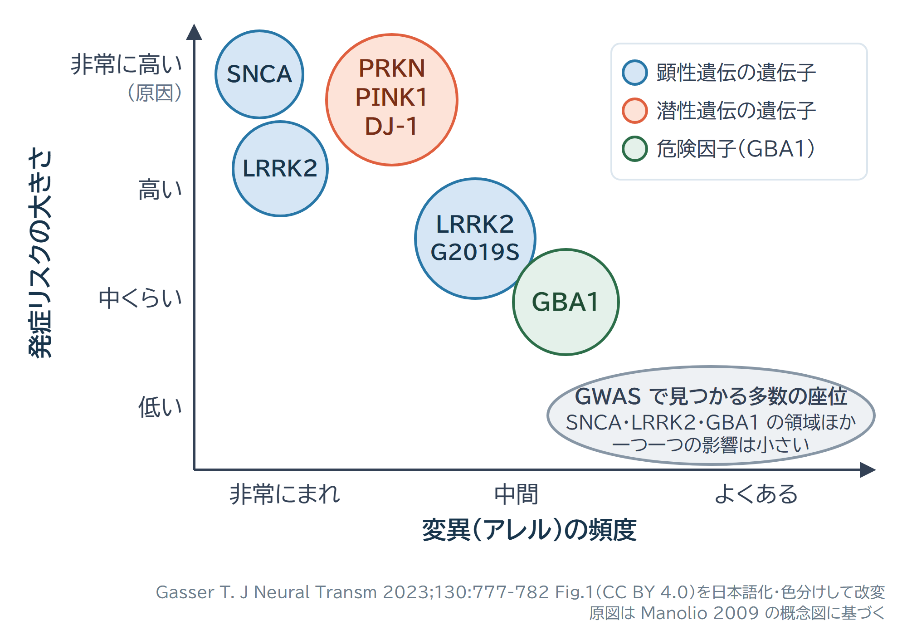
変異の頻度（横軸）と発症リスクの大きさ（縦軸）。まれな変異（左上）は「原因」とみなせ、GWAS で見つかる多数の座位（右下）は一つ一つの影響が小さい。LRRK2 G2019S と GBA1 は中間に位置する。
図2
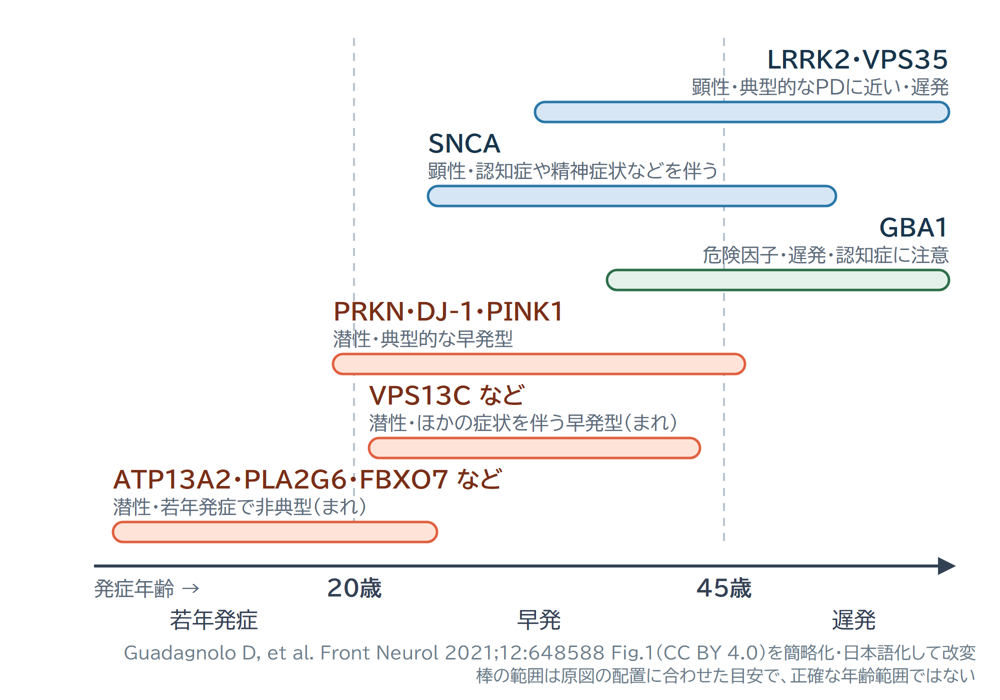
遺伝子ごとの発症年齢の目安と遺伝形式。棒の範囲は総説の図の配置に合わせた概念的な目安で、正確な年齢範囲ではない。
図3
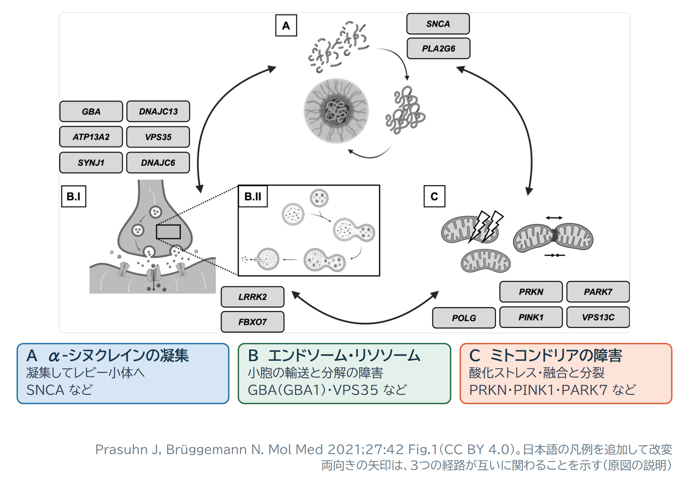
3つの経路と関わる遺伝子。A：α-シヌクレインの凝集、B：エンドソーム・リソソーム（GBA1・VPS35 など）、C：ミトコンドリアの障害（PRKN・PINK1・PARK7 など）。両向きの矢印は経路どうしの関わりを示す。
図4
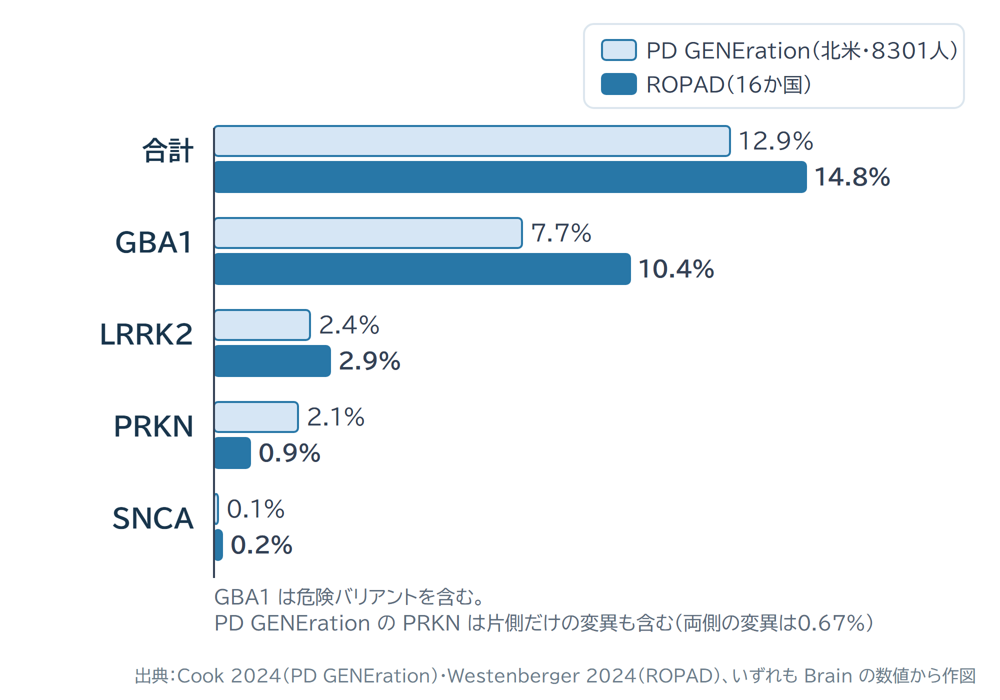
発症年齢や家族歴で絞り込まずに調べたパーキンソン病患者のうち、遺伝子検査が陽性になった割合。GBA1 は危険バリアントを含み、PD GENEration の PRKN は片側だけの変異も含む。
図5
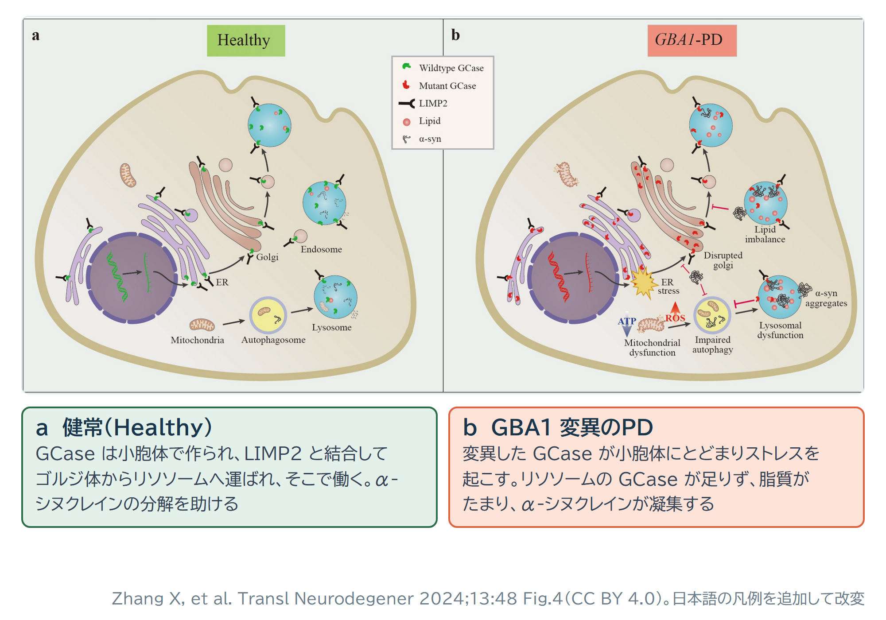
GBA1 と GCase の働き。a：健常では GCase が LIMP2 と結合してリソソームへ運ばれる。b：GBA1 変異では小胞体ストレス、リソソーム機能の低下、脂質の偏り、α-シヌクレインの凝集が起こる（主に基礎研究の知見）。
図6
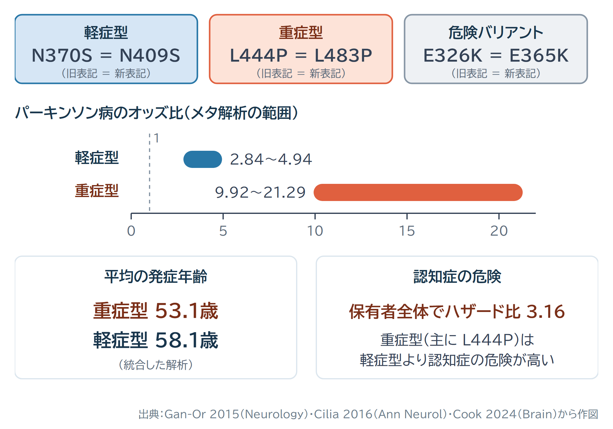
GBA1 の変異の種類（旧表記と新表記）と、パーキンソン病のオッズ比・発症年齢・認知症の危険。
図7
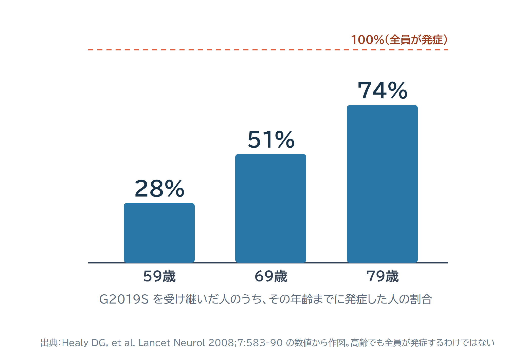
LRRK2 G2019S を受け継いだ人のうち、その年齢までに発症した人の割合（世界21施設・133家系のデータ）。
図8
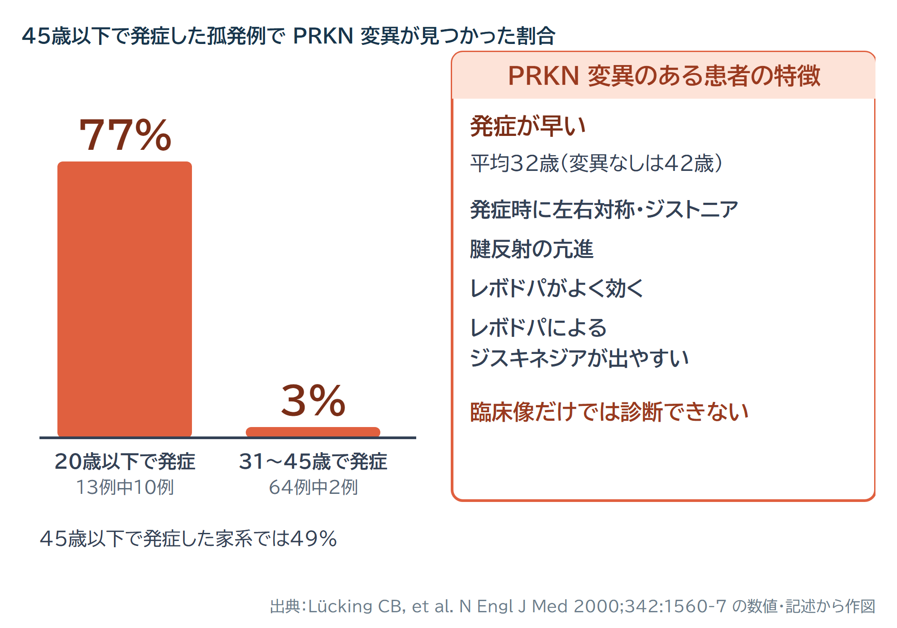
45歳以下で発症した孤発例のうち、PRKN 変異が見つかった割合（発症年齢別）と、PRKN 変異のある患者の特徴（欧州中心の2000年の研究）。
図9
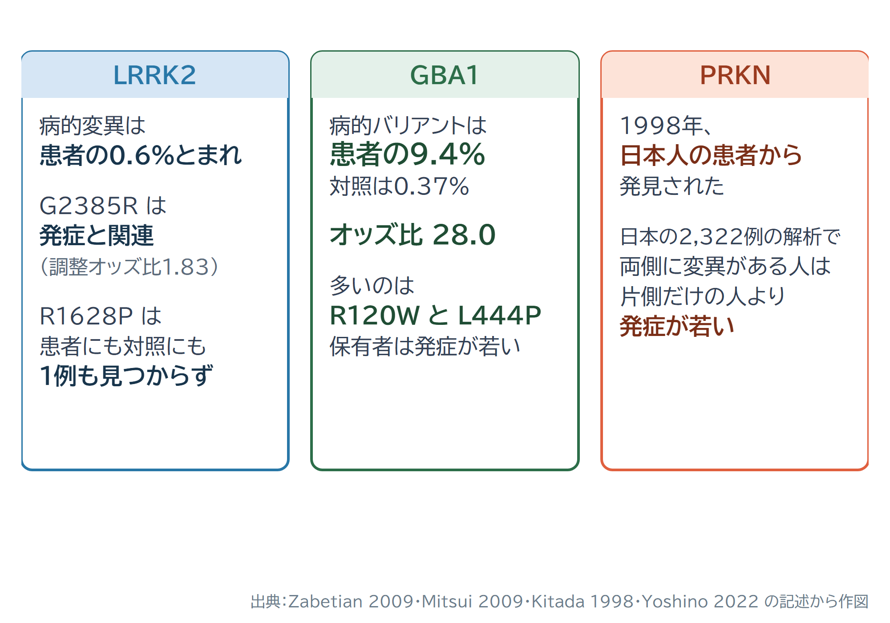
日本人で押さえたい3つの遺伝子（LRRK2・GBA1・PRKN）のデータ。
図10
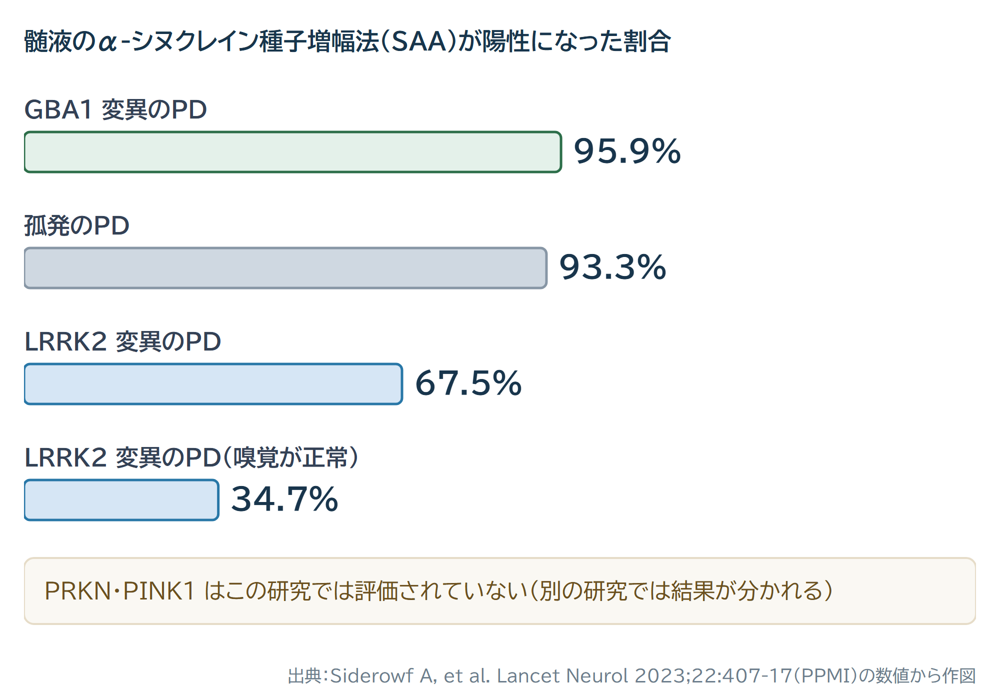
髄液 SAA の陽性率と遺伝型（PPMI の横断解析）。PRKN・PINK1 はこの研究では評価されていない。
図11
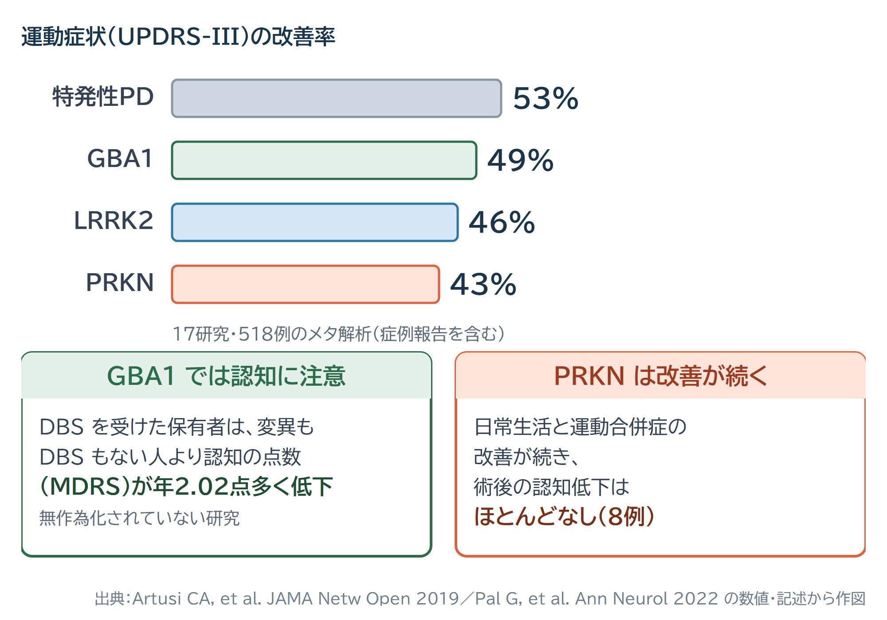
遺伝型ごとの視床下核DBSの運動症状の改善率と、GBA1・PRKN の術後の特徴。
図12
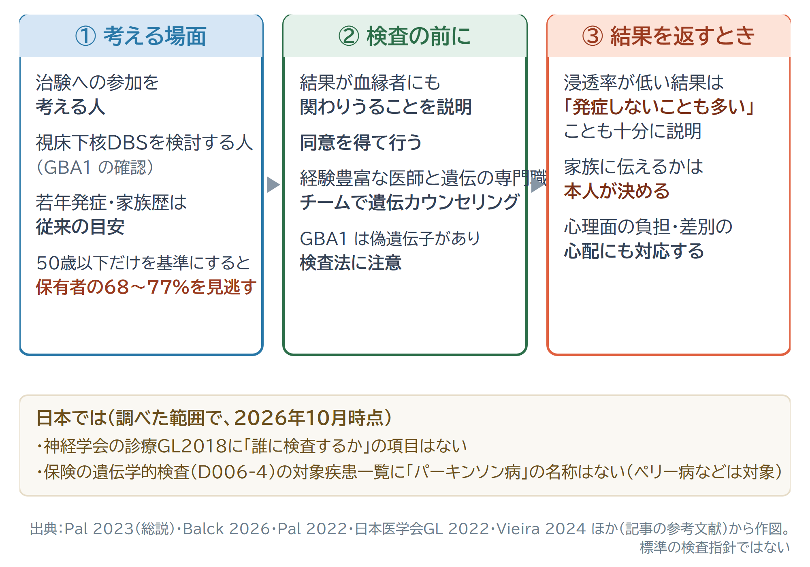
遺伝学的検査を考える流れ（文献の記述をもとに整理したもので、標準の検査指針ではない）。
図13
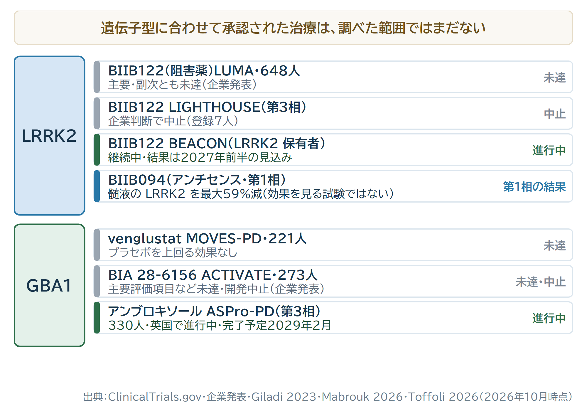
遺伝子を標的にした主な治験の状況（2026年10月時点）。LUMA と ACTIVATE の結果は企業の発表で、論文としてはまだ出ていない。